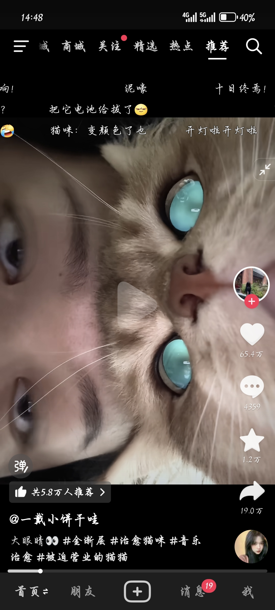
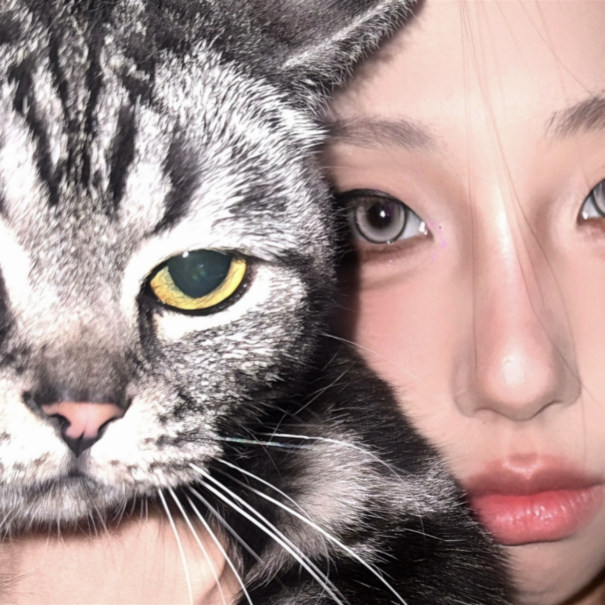
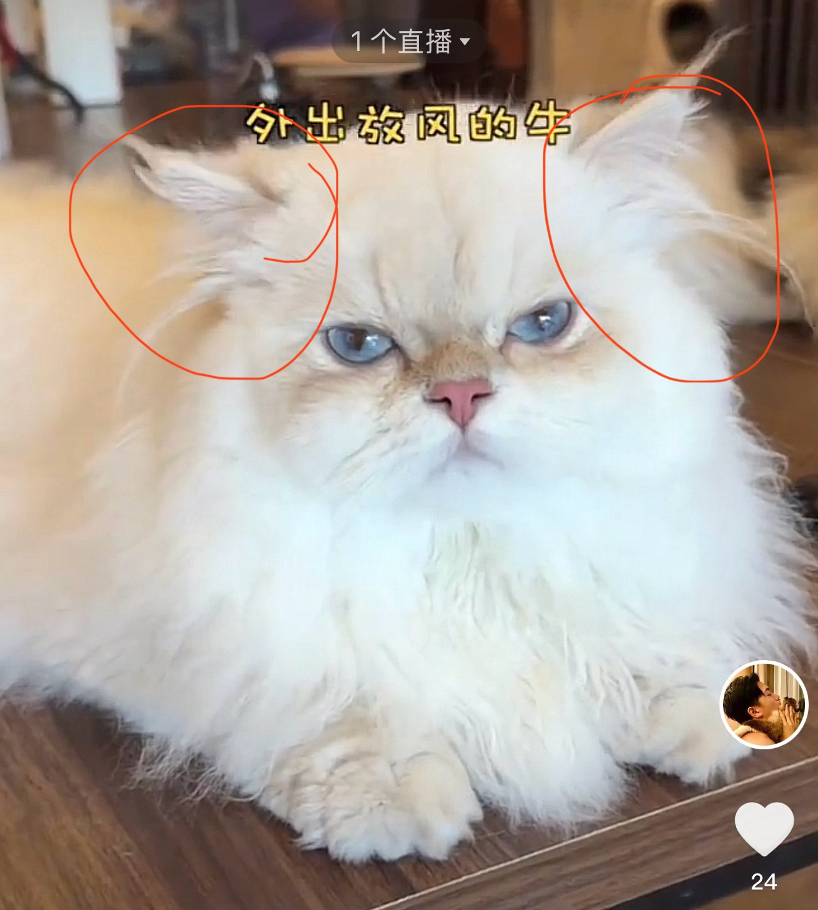
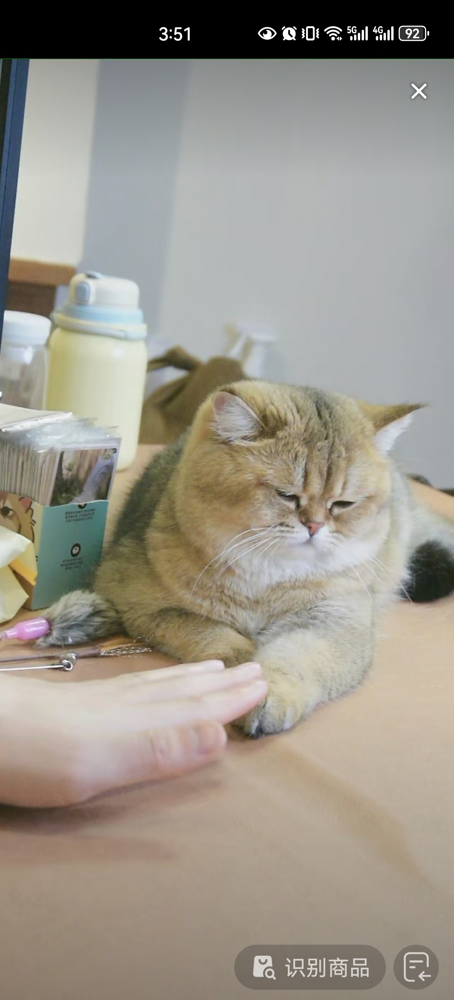
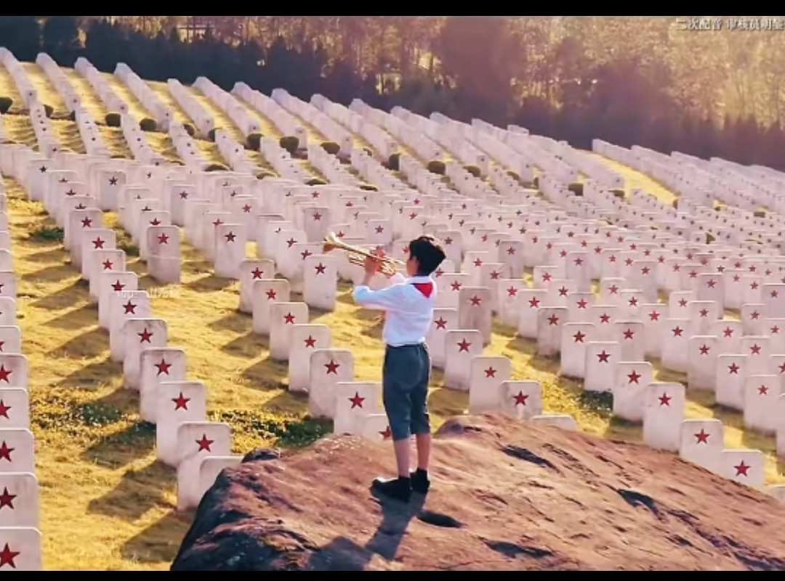
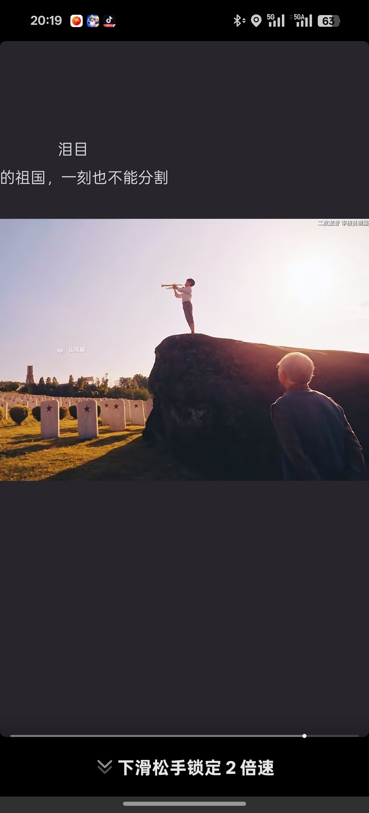

要吃饭的时候一不小心咬破了呢。[宕机]
什么我都认 你们写好我签字 让我睡一会
带个掏耳勺就行了，被抓的时候立马掏耳朵这样其他人就不敢动你了[白眼]
我朋友看了天涯神贴，贷了八个，直接摆烂。开始各种电话，轰炸，催债。现在十几年过去了，啥事没有[捂脸]
可惜当年没有逛过天涯论坛，感觉错过了几个亿[捂脸]
看过天涯论坛求救，那时候的金三角都把人救出来，真的很多牛人，还有人发帖叫我们普通人最好屯30个比特币，那时候比特币不值钱
天涯就是透露太多上层隐秘被干掉了！
还有，你发现富人都在用手上所有的资源在帮助他们的孩子接班或创业，而大部分普通家庭的父亲一直在讲“你要自力更生，不要依赖父母”！
我以前看港产鬼片、日本鬼片、美国鬼片等等没有被吓到，但是看天涯论坛被吓到了，我只用一个邪字表达我当时的心情，尽管怕但还是忍不住看天涯论坛，因为真的能看到很多想象不到的东西，又邪又神秘！！！
赵一博的兵在哪
猫:开！ 
小猫的大灯刷一下就打开了
[流泪]我也想拍水灵灵的萌照 
连蓝牙了[柴犬]
会发光诶[求抱抱][求抱抱]
但凡懂一点动物心理学的都知道这个小猫是不开心的，它的微表情都在表示它内心的焦虑，我能很明确的看出来，它想来我家
这小玩意神奇啊 是小猫的眼睛特殊情况下都会这样吗？（没在生活里面见过猫）
郑永康是个人物[捂脸][赞]
今天考试不小心哼出来了，被旁边同学打了两个耳光[愉快][愉快][愉快]
[捂脸]
“唔..xy再睡五分钟嘛.” 'kk迷迷糊糊地睁开 眼，嘟囔着：“可是被窝好暖和..裕裕抱抱才能起来～”说着伸出手，像只小猫一样往cxy怀里钻。cxy 无奈地笑了笑，一把将她捞起来，轻轻拍了拍她的后背：“好啦好啦，抱抱就起来，不然一会神枪哥哥要来笑你喽。” 厨房里飘着烤面包的香气，神枪正忙着煎蛋，cxy 在摆弄着咖啡机。kk蹦蹦跳跳地跑过去，从后面抱住神枪的腰：“今天煎蛋要溏心的哦～"神枪被她吓了一跳，手里的铲子差点掉下来，无奈地笑道：“kk，你这样突然抱上来，蛋都要煎糊了。” zyk吐了吐舌头，又凑到cxy：“咖啡要加好多好多奶，kk怕自苦～”cxy揉了揉她的头发，宠溺地说： “知道啦，小公主的咖啡当然要甜甜的。” 早餐桌上，kk一边咬着溏心蛋，一边晃着腿： “今天去游乐园，kk要坐三次摩天轮！还要吃棉花糖！”cxy笑着递给她一片涂好果酱的面包：“好好好，都依你。不过吃完早餐得先把外套穿上，早上风大。”
@ZmjjKK gai出新专辑了
说白了 都直播了 还上班干嘛
她身高这么优越可以去当模特啊[泣不成声][泣不成声][泣不成声]
牛 全是犟种毛 
娘家糯米丸子发的照片哈哈哈哈 牛牛超绝大眼[色][色][色][色]
突然发牛牛的视频是不是牛牛已经开始上班了呢
姥爷家的大部分种公一旦开窍眼神就会从这样[惊喜]变成→[酷拽]。看牛牛这眼神真的离开窍不远了。（六六例外，我们是新鲜哥。）
念念是老实血线，卡子哥邪恶血线，嘎子哥棉花糖血线，牛牛又来个犟种血线
这是牛，这是离，这是老牛离地组合（无恶意）[舔屏][舔屏][舔屏] 
牛我以后可是要肩负大任的，对我客气点[呲牙][呲牙][呲牙]
是中国人的说到
这个烈士好是直的存在，当时拍电影的时候可能真的邀请到了他
这个老爷子我想起来那个公益广告，老爹忘记了儿子但是没忘记他最爱吃饺子[流泪]
这个时候来个转场，绝对封神 
这才是小孩子该看的视频，而不是那种那咋了那咋了[微笑][微笑][微笑]
以前清明节学校还组织去烈士陵园扫墓 现在不知道为什么没有了
这张封神[流泪] 
听到我和我的祖国[流泪]立马哭出来[流泪]
我爷爷63军189师，我爸63军187师！ 真的超级自豪嘿嘿[抱抱你]
我和我的祖国，一刻也不能分割[流泪]
看似可爱 实则是智障[黑脸]
你点开葱油饼的私信。我不信你有他速度快[看]
我还没反应过来，那跳投哥直接给我发了一个，6块
我今年41岁了，终于有宝宝了，而且也是第一胎哟，真的太不容易了，[玫瑰][玫瑰]我要晒晒，没有人恭喜我也是很开心的[送心][送心][送心]
比昨天进步了，咱就得表扬[鼓掌][鼓掌][鼓掌]
就这个爸，到缅甸都得是销冠
营销的爹，沉默的妈，听话的孩子，幸福的家[赞]
清华校长该找你来了，我们差哪里了，一天天的北大北大。期待北大校长的评论！[捂脸][捂脸][奋斗]
视频可要一直拍下去呀，我只想知道最后上没上北大。[比心][比心][比心]
我敢打赌如果老师都像这个爸爸一样给学生这样洗脑百分之八十的孩子都会考上北大，你信不信[捂脸]
《夏洛特烦恼》无需多言，《羞羞的铁拳》和《西虹市首富》也都挺不错的，剩下都是及格线以下，《李茶的姑妈》和《日不落酒店》看的人恶心
夏竹不爱钱，但感动夏竹的每一步都是钱
特朗普：Who said who said
句句不提特朗普句句都是特朗普
特朗普之歌
特朗普加关税前就听这个
[看]谁懂不能艾特川普的无力感
这个女孩太有魅力啦
它居然可以空口发出这个声音！！
家中有善口技者[赞]
冷知识，搜一下伯力爵面包干是一个代工厂但便宜很多
它怎么空口学出来的声音[宕机]
这个面包干巨巨好吃
给鳌拜喂口
乌龟：
种族歧视[愉快]
Read more: